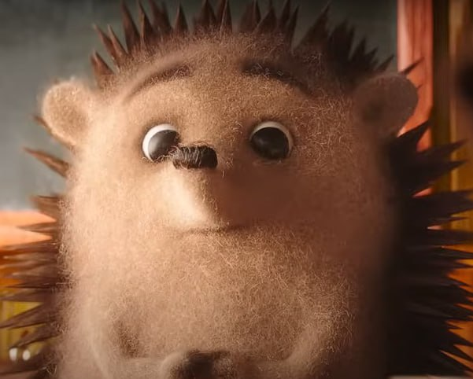

"Танцюючий їжак. Він уособлює справжню радість і свободу. Він не боїться виражати свої емоції через танець, навіть якщо навколишні дивляться на нього з подивом. Його енергія заряджає всіх навколо, а його сміливість нагадує, що інколи варто просто радіти життю, не зважаючи на обставини. Крім того, його чарівність і грація роблять його унікальним персонажем. Він нагадує, що навіть у маленькому, колючому їжачку може жити велика любов до мистецтва. + він любить поїсти. Слей" --Ксенія
"Цей їжачок з мультфільму «їжак повинен бути колючим». У цьому мультфільмі він приходить до школи та знайомиться з іншими тваринками, та в нього є проблема— він колючий. Через це ніхто його не може обійняти, ніхто не може з ним сидіти поруч, через це йому було дуже самотньо та сумно. Але, на новий рік інші звірятка подарували йому пінопласт, точніше, шматочки пінопласту. Коли їжачок відкрив подарунок він спочатку не зрозумів навіщо йому пінопласт, але потім звірятка допомогли йому надіти ці шматочки пінопласту на кожну його голку. У кінці цього мультфільму він нарешті зміг обійнятися з усіма звірятами, та більше не почувався самотньо." --Мирослава
"Так званий інтернет-мем «Санік» є одним з найстаріших еталонів карикатури культури сучасних інтернет ідей та проєктів. Він є навмисно поганою пародією на їжака Соніка. Спочатку здобувший популярність у колі цінувачів оригіналу, а з часом і поза його рамками. Ідеально інтегрувавшись у культуру MLG мемів він став іконою свого часового відрізка. Пізніше, він став забуватись, та вважатись чимось "заїзжаним" або не смішним. Але попри це він все одно заслуговує своє місце в уявному "музеї" легендарних, вічних ідей людей." --Андрій